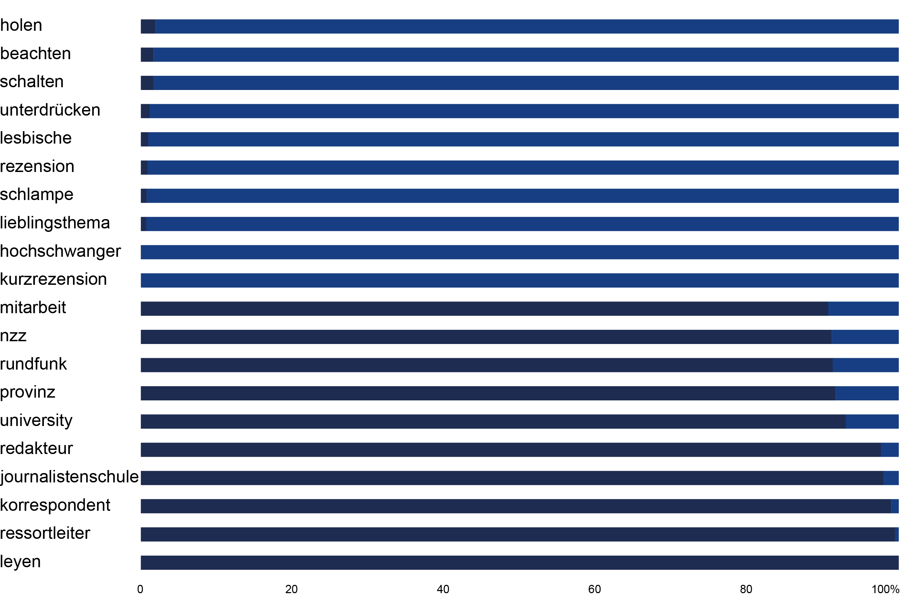

gender bias
BY Jan Strozyk
Published August 10, 2018
Etiam porta sem malesuada magna mollis euismod. Aenean lacinia bibendum nulla sed consectetur. Nullam quis risus eget urna mollis ornare vel eu leo. Integer posuere erat a ante venenatis dapibus posuere velit aliquet. Fusce dapibus, tellus ac cursus commodo, tortor mauris condimentum nibh, ut fermentum massa justo sit amet risus. Duis mollis, est non commodo luctus, nisi erat porttitor ligula, eget lacinia odio sem nec elit. Nullam quis risus eget urna mollis ornare vel eu leo.
Subhead
Etiam porta sem malesuada magna mollis euismod. Aenean lacinia bibendum nulla sed consectetur. Nullam quis risus eget urna mollis ornare vel eu leo. Integer posuere erat a ante venenatis dapibus posuere velit aliquet. Fusce dapibus, tellus ac cursus commodo, tortor mauris condimentum nibh, ut fermentum massa justo sit amet risus. Duis mollis, est non commodo luctus, nisi erat porttitor ligula, eget lacinia odio sem nec elit. Nullam quis risus eget urna mollis ornare vel eu leo.
sus eget urna mollis ornare vel eu leo. Integer posuere erat a ante venenatis dapibus posuere velit aliquet. Fusce dapibus, tellus ac cursus commodo, tortor mauris condimentum nibh, ut fermentum massa justo sit amet risus. Duis mollis, est non commodo luctus, nisi erat porttitor ligula, eget lacinia odio sem nec elit. Nullam quis risus eget urna mollis ornare vel e
Most male and female words
The chart shows the words that appear most often in a male and female context, respectively. The percentage value does factor in the total amount of sentences for each gender.
NOTE: an optional note or source can go here.
SOURCE: Sourcename here
Etiam porta sem malesuada magna mollis euismod. Aenean lacinia bibendum nulla sed consectetur. Nullam quis risus eget urna mollis ornare vel eu leo. Integer posuere erat a ante venenatis dapibus posuere velit aliquet. Fusce dapibus, tellus ac cursus commodo,
tortor mauris condimentum nibh, ut fermentum massa justo sit amet risus. Duis mollis, est non commodo luctus, nisi erat porttitor ligula, eget lacinia odio sem nec elit. Nullam quis risus eget urna mollis ornare vel eu leo.
Word occurences by gender
The chart shows the 1000 most common words for male and female sentences respectively. Each dot represents one word. Dots further on the right appear more often in male sentences, dots further up appear more often in female sentences.
NOTE: an optional note or source can go here.
SOURCE: Sourcename here
Etiam porta sem malesuada magna mollis euismod. Aenean lacinia bibendum nulla sed consectetur. Nullam quis risus eget urna mollis ornare vel eu leo. Integer posuere erat a ante venenatis dapibus posuere velit aliquet. Fusce dapibus, tellus ac cursus commodo,
tortor mauris condimentum nibh, ut fermentum massa justo sit amet risus. Duis mollis, est non commodo luctus, nisi erat porttitor ligula, eget lacinia odio sem nec elit. Nullam quis risus eget urna mollis ornare vel eu leo.
Distribution of sentences by gender
There is a total of 7.8 million sentences in my data set. Roughly half of them cannot be categorized in male or female sentences. For every female sentence, there are four male sentences.
NOTE: an optional note or source can go here.
SOURCE: Sourcename here
Etiam porta sem malesuada magna mollis euismod. Aenean lacinia bibendum nulla sed consectetur. Nullam quis risus eget urna mollis ornare vel eu leo. Integer posuere erat a ante venenatis dapibus posuere velit aliquet. Fusce dapibus, tellus ac cursus commodo,
tortor mauris condimentum nibh, ut fermentum massa justo sit amet risus. Duis mollis, est non commodo luctus, nisi erat porttitor ligula, eget lacinia odio sem nec elit. Nullam quis risus eget urna mollis ornare vel eu leo.